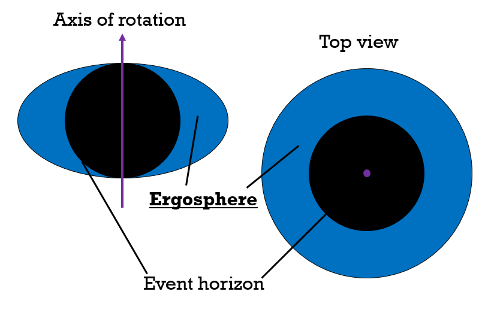
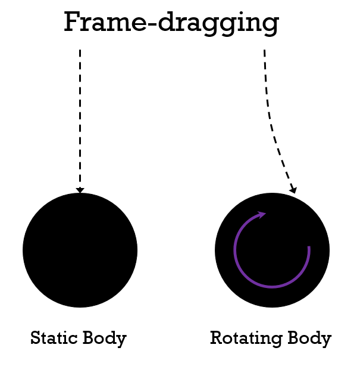

The ergosphere is another boundary in spacetime, like the event horizon. The difference is that it is a boundary where things cannot stand still, and only applies to spinning black holes (see Kerr black holes).
The ergosphere's surface (ergosurface) is often an oblate spheroid (think of it as a sphere, but flattened on one axis). The area between this and the event horizon is the ergosphere itself. So what does this area represent?

It is a boundary based on frame-dragging. Frame-dragging occurs when, for example, a spinning mass causes an object falling straight towards it to move in the direction of rotation slightly. Think of it like a whirlpool, entering it .
In the ergosphere, the force required to counteract frame dragging is infinite (meaning it's not possible). An object would have to travel at the speed of light to oppose frame dragging at the ergosphere.
One important thing to note is this is different from the event horizon. Objects in this region can still escape, they just need to travel really quickly.